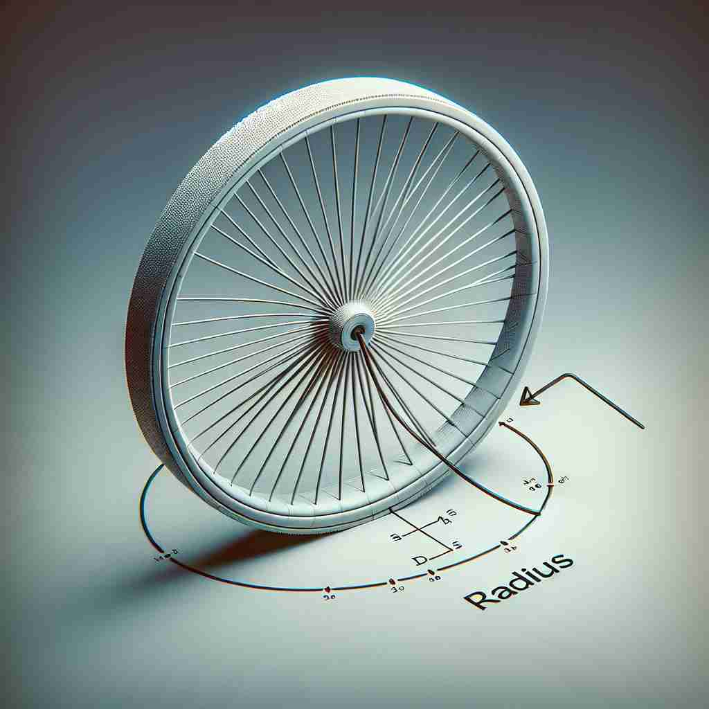

💬 The radius of the wheel is ten centimeters. 轮子的半径是十厘米。

💬 To create the circle, you need to draw a radius from the center. 要画圆，您需要从中心点画出一个半径。

💬 The teacher shows the children how to draw a radius from the center of the circle. 老师教孩子们如何从圆心画出半径。
💬 The radius of the wheel is ten centimeters. 轮子的半径是十厘米。
💬 To create the circle, you need to draw a radius from the center. 要画圆，您需要从中心点画出一个半径。
💬 The teacher shows the children how to draw a radius from the center of the circle. 老师教孩子们如何从圆心画出半径。
🧠 想象一个圆，'radius' 最初表示从圆心到圆周的直线。这个核心概念延伸出了距离、区域、解剖学中的桡骨，以及车轮边缘等含义。通过visualize一个圆及其半径，可以轻松联想并记忆 'radius' 的各种用法。
🔈 ['reɪdɪəs]
🗝️ n. a straight line from the center to the edge of a circle or sphere 从圆或球的中心到边缘的直线
🎭 在一个欢乐的儿童游乐园里，小朋友们围成一圈跳舞。老师用粉笔在地上画出一个大大的圆，然后用尺子从圆心到圆边画了一条直线，并告诉孩子们：这就是一个圆的'radius'。
💬 The radius of the circle is 5 centimeters. 圆的半径是5厘米。
🌳 来自拉丁语中的词根 'radius'，意为 '光束、辐射'，在几何中指的是圆的半径。
💡 可以通过其与 'radio' 的联系来记忆，想象无线电广播是通过电波从一个中心（类似圆心）向外传播的过程，这与 'radius' 从中心向外延伸的概念相似。
🗝️ n. the distance from the center to the edge of a circle or sphere 从圆或球的中心到边缘的距离
🎭 想象一下，一个科学家正在实验室里测量一个透明球体的大小。他用量尺从球的中心到外边缘测量，思索着这个'distance'。他对助手说：'这就是这个球体的'radius'。'
💬 The explosion had a blast radius of 100 meters. 爆炸的冲击波半径为100米。
🤔 从表示线段延伸到表示距离
🗝️ n. a circular area around a central point 一个围绕中心点的圆形区域
🎭 在一个繁忙的城市广场上，音乐家在中心演奏音乐。游客们坐在不同的距离享受音乐，形成一个圆圈区域。这个区域就像以音乐家为中心的'radius'一样散开。
💬 The store delivers within a 10-mile radius. 商店在10英里范围内配送。
🤔 从线段延伸到覆盖的整个区域
🗝️ n. the bone on the thumb side of the human forearm 人类前臂拇指一侧的骨头
🎭 在一节生物课上，老师用模型展示人类的手臂。他指着靠近拇指的一根骨头，说：'这根骨头叫做'radius'，它帮助我们旋转和移动前臂。'
💬 He fractured his radius in a skiing accident. 他在滑雪事故中骨折了桡骨。
🤔 形状类似于从圆心到圆周的直线
🗝️ n. the outer edge of a wheel 轮子的外边缘
🎭 在一家自行车修理店里，技师正在修理一个车轮。他检查轮子的外缘，确保每一部分都稳固。技师对学徒解释，这部分也可以被称为'radius'。
💬 The spokes connect the hub to the radius of the bicycle wheel. 辐条将轮毂与自行车轮的半径连接起来。
🤔 车轮边缘到中心的距离类似于半径